⏱️ 4 Min Read
The Art of the Perfect Cheese Pull
Discover how cheese selection, moisture, temperature, and melting techniques help create that irresistible cheese pull in every grilled sandwich.
A great grilled cheese is more than bread and cheese. It’s about the right balance of buttery crispness, rich flavor, and that irresistible stretch of melted cheese. Discover how bread choice, cheese combinations, heat, and patience come together to create a perfectly golden sandwich.
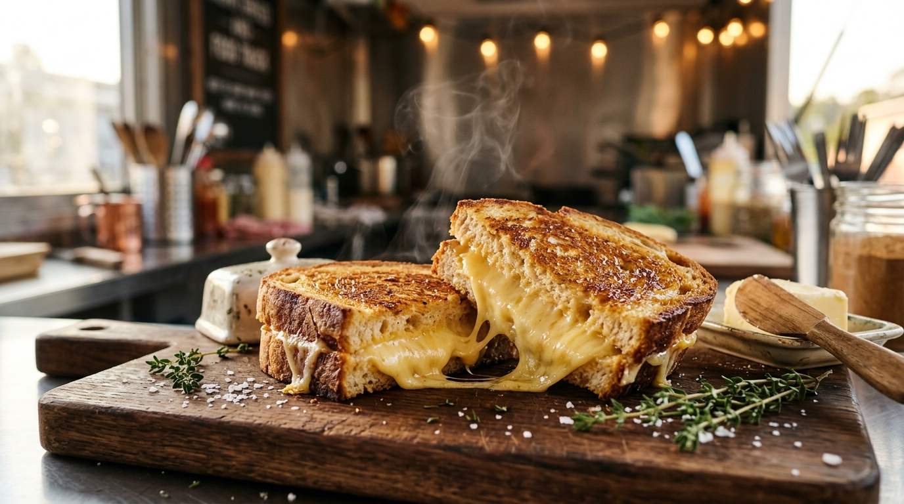
Fresh ideas, delicious discoveries, and stories from our world of grilled cheese.
Explore our stories by the topics you love most—from cheese melt science and griddle tips to behind-the-scenes food truck life and comfort food recipes.
Discover how cheese selection, moisture, temperature, and melting techniques help create that irresistible cheese pull in every grilled sandwich.
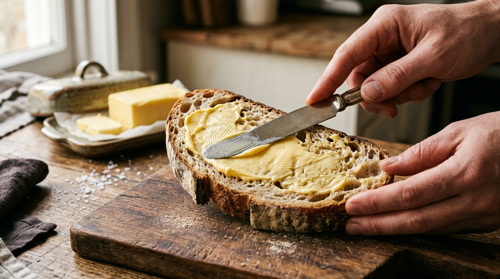
Learn how butter, bread selection, and controlled heat work together to create a crispy golden crust with a soft, cheesy center.

Take a closer look at food truck life, from ingredient preparation and sizzling griddles to the final sandwich served fresh to hungry customers.
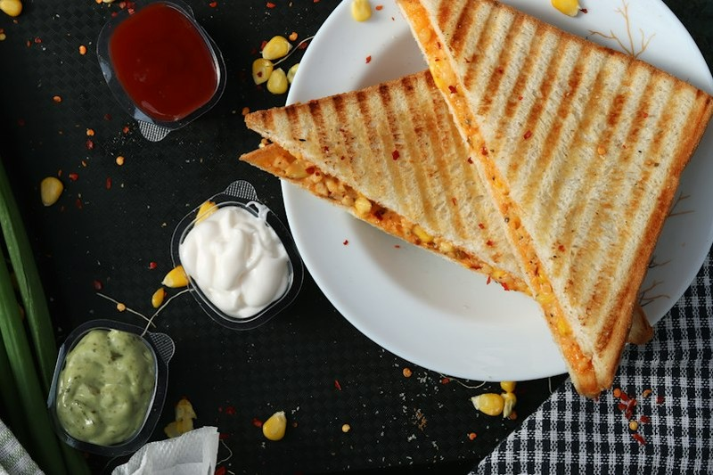
Explore the flavors and textures of cheddar, mozzarella, Gouda, and other cheeses to discover combinations that bring richness, creaminess, and delicious flavor.
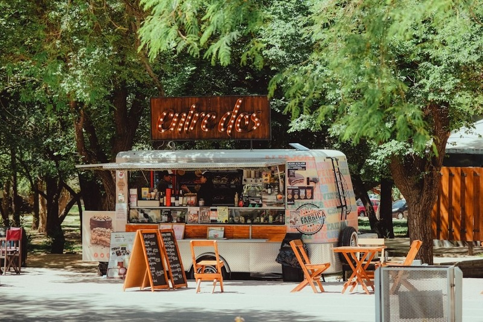
Discover the community, atmosphere, and memorable food moments that make street food culture special, from lively outdoor festivals to casual gatherings.
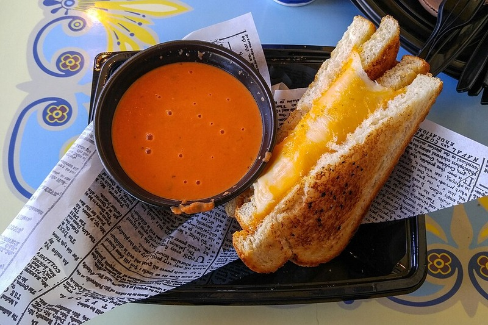
Find inspiration for relaxed lunches, friendly get-togethers, and special celebrations with delicious grilled cheese pairings and comforting food ideas.
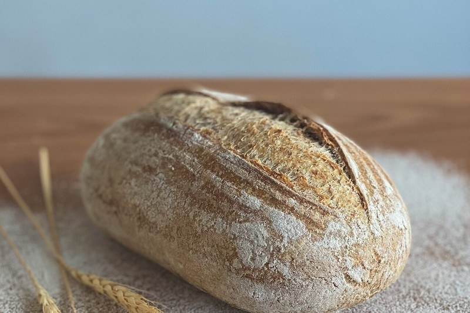
Explore the Maillard reaction, crumb open-structure, and controlled steam release that create a shatteringly crisp crust without letting melted cheese turn soggy.
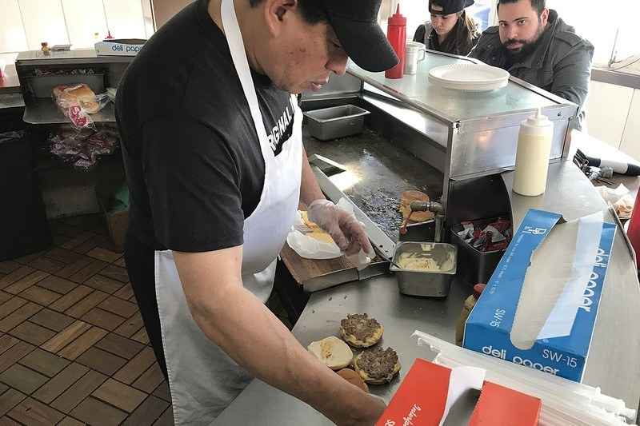
Why dual-temperature surface zones and a quick splash of water under a stainless steel melting dome make all the difference between scorched bread and molten center cheese.
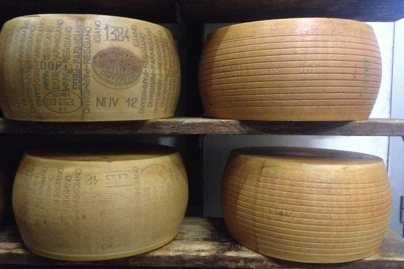
Meet the independent family dairy farms behind our 24-month sharp Wisconsin cheddar and learn how cave-aging and pasture grass transform every melted bite.
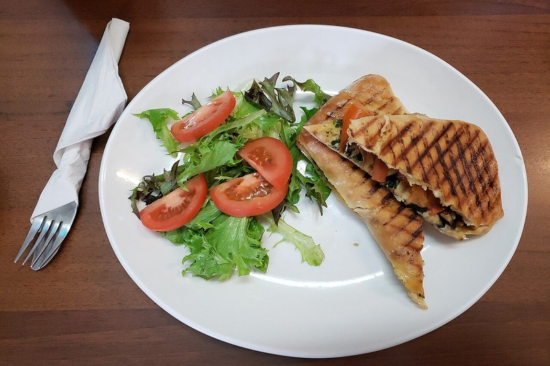
Pairing caramelized cremini mushrooms with nutty Swiss Gruyère, Fontina, and Italian white truffle oil brings deep, savory umami to classic comfort sandwiches.
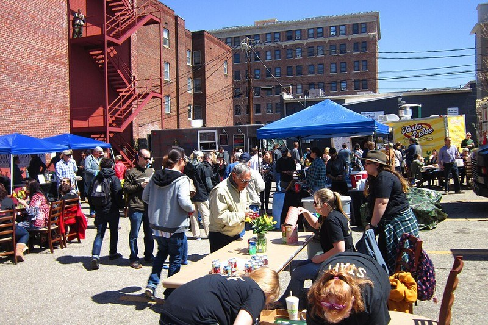
From bustling weekend night rallies to neon curbside stops, experience the shared laughter, aroma of sizzling butter, and vibrant community after hours.

Why bright plum tomato acidity balances decadent cultured butter and aged cheese fat, making hot soup and grilled sourdough the holy grail of comfort dining.

Discover how allowing overflow cheese to sizzle directly on the hot steel flattop creates a crisp, deeply savory frico lace skirt prized by street food purists.
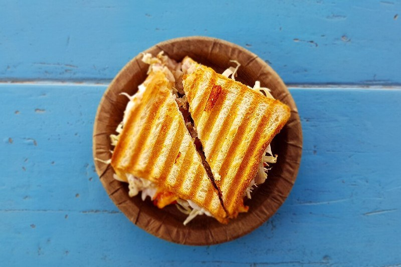
Understand the textural differences between ridged contact grills and heavy cast-iron presses when melting multi-layer gourmet sandwiches to golden perfection.
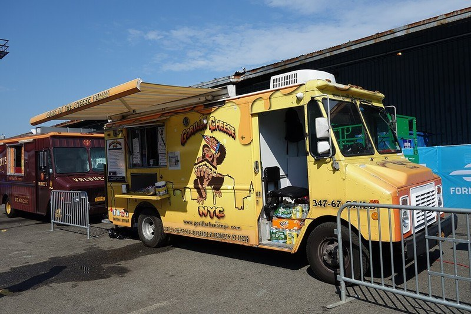
There is no dining room wall separating cook from guest—just an open service window where friendships, neighborhood stories, and warm smiles are shared every service.
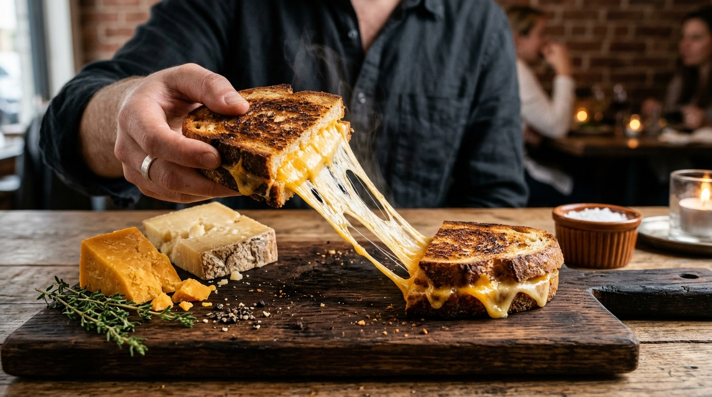
Why pairing high-tang lactic acidity with a nutty, elastic alpine cheese delivers the deepest, most well-rounded gourmet melt profile in comfort food history.
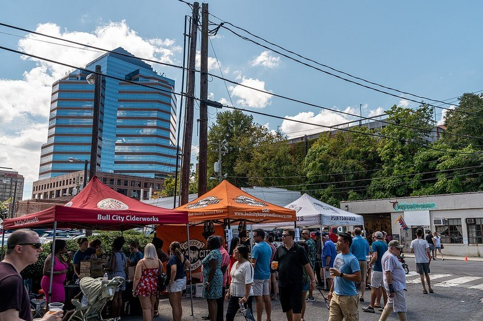
How modern street food transformed from quick grab-and-go into artisan culinary hubs where chefs craft high-technique comfort foods on wheels for vibrant urban communities.
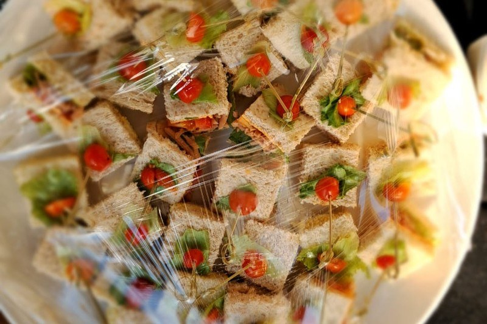
Why couples, private parties, and corporate events are swapping traditional catering buffets for interactive, made-to-order curbside grilled cheese bars.
Loved the stories? Discover your next favorite melt.